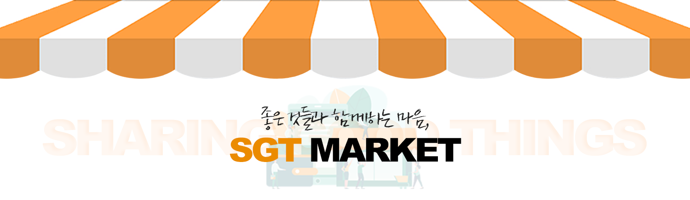

중고마켓 SGT Market
모바일 위주로 퍼져있는 중고 사이트를 웹기반으로 제작
분류: 팀
진행 기간: 2022.09.19 ~ 2022.10.04
Skills: Visual Studio Code, HTML, CSS, Javascript, jQuery, Bootstrap, Node.js, MySQL
팀 구성: Front-End (윤경민, 정구영, 안수지) / Back-End (윤동희)
서비스 내용
중고 거래가 활성화된 시점에 모바일 위주로 퍼져있는 중고 사이트를 웹 기반으로 제작
현재 위 사이트에서 제공하는 핵심 기능은 다음과 같습니다.
1. 다양한 물품 교환 및 판매
2. 실시간 채팅을 이용한 중고 거래 서비스
성장 경험
1. 모바일 환경에 대한 이해
모바일에서 확인이 용이하도록 미디어 쿼리를 학습하여 적용했습니다.
2. 협업
SGT MARKET 팀은 프론트엔드 (3) , 백엔드 (1) 총 4명으로 구성되어 있습니다.
4명 모두 기획 단계부터 함께 참여했으며, 개발 과정에서도 끊임없는 대화를 나누었습니다.
디자인적으로 감각이 있는 팀원이 있어 많은 도움을 받았고, 백엔드 담당자와의 협의를 통해
모든 팀원이 각자 맡은 파트의 프론트부터 백엔드까지 경험해 볼 수 있었습니다.

수상
포스코가 주관한 웹 개발자 양성과정 2기 2차 프로젝트 최우수상 수상
담당한 부분
카테고리 페이지
- Pagination.js 라이브러리로 Pagination 구현
- MySQL에서 데이터 가져오기
- 가격, 등록순, 물건 개수별 정렬 (Sort 함수)
- 찜하기 버튼 클릭 시 axios 요청을 통해 찜 목록에 추가

채팅 페이지 (UI)
- UI 작업

전체 서비스
구현 기능(샘플 사진은 노션 및 깃허브 확인)
🔗Github
🔗Notion
메인 페이지
- 서버에서 데이터를 받아와서 상품 컨텐츠 render
- css와 javascript로 햄버거 토글 메뉴 제작
- 자동으로 넘어가는 배너 → slick library 사용
- nav 상단의 login / logout 바는 로그인 세션에 따라 반응
- 백엔드에서 axios 요청을 받아와서 최근 업로드 순 / 찜 많은 순으로 레이아웃 정리 (result값 각 7개씩)
- 찜(heart) 기능 로그인 세션과 연동하여 로그인시 활성화
- 페이지 자체 반응형 (nav, footer, 레이아웃 등)
제품 상세 페이지
- 메인화면 또는 카테고리에서 상품을 클릭했을 때 상세페이지가 render 되도록 처리
- 업로드한 유저의 정보, 주소지, 상품 제목, 카테고리, 내용, 가격, 상품의 사진을 백엔드에서 받아옴
- 찜하기 버튼 클릭 시 axios 요청을 통해 찜 목록에 추가되도록 함.
- 페이지 내 ‘이 카테고리의 다른 상품’에서는 같은 카테고리의 상품을 최대 2개까지 랜덤으로 render
- 이미지가 여러 장 있는 상품일 경우 Array 값을 받아와 carousel로 보일 수 있도록 처리 / 이미지 크기는 고정비로 최대값 넘지않게 처리
- 페이지 자체 반응형
카테고리 페이지
- nav바에서 카테고리 별 클릭시 DB에서 등록 물건 가져오기 (물건 목록은 Bootstrap 사용)
- 가격, 등록 순 정렬 (카테고리 별 연동) sort 함수 사용
- 4개, 8개 배열 (카테고리 별 구현가능)
- 페이지네이션 기능 (Pagination.js jQuery Plugin 사용)
- 찜(heart) 기능 로그인시 활성화
채팅 페이지
- 미디어쿼리 및 기타 CSS작업
업데이트 중...
업데이트 중...
업데이트 중...
업데이트 중...
업데이트 중...
업데이트 중...